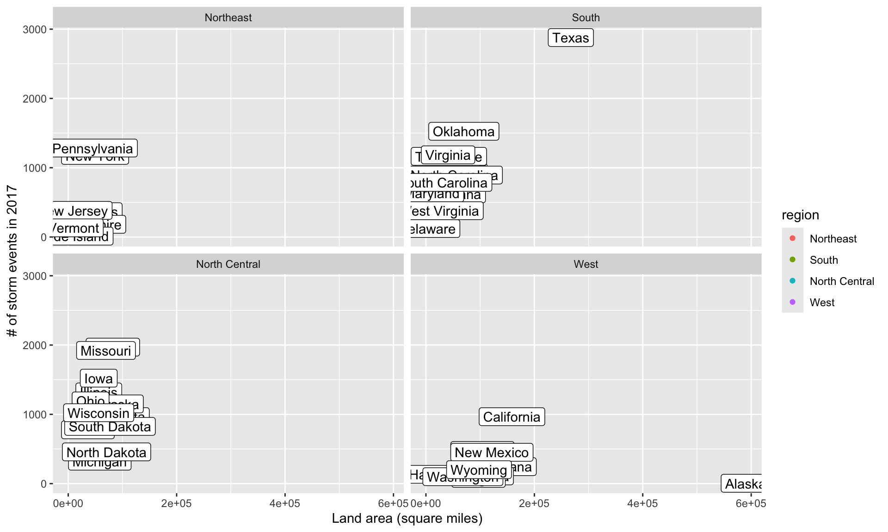
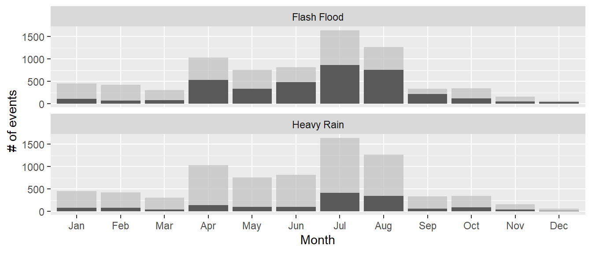
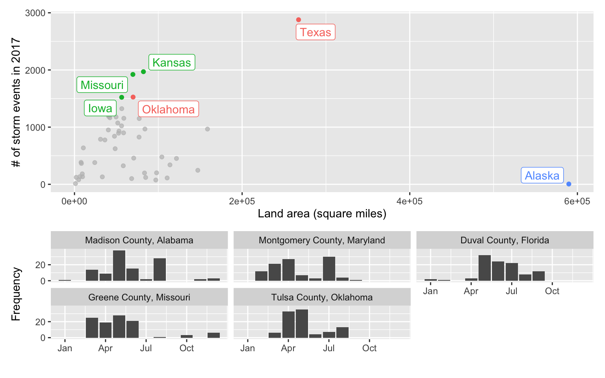
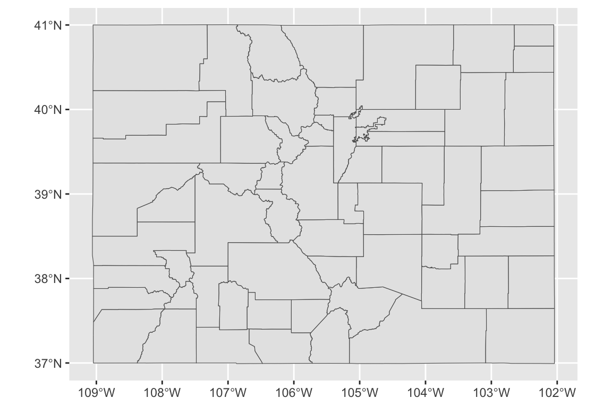
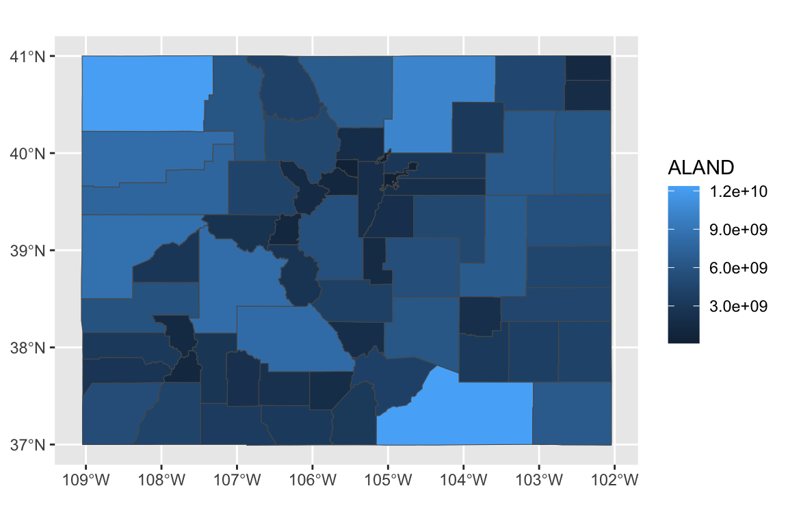
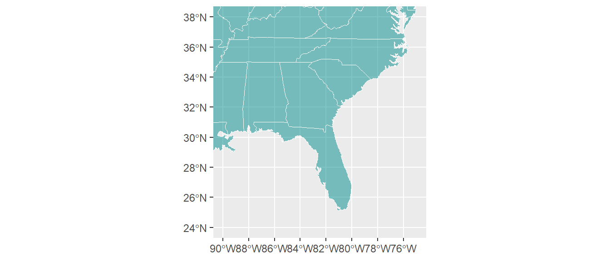
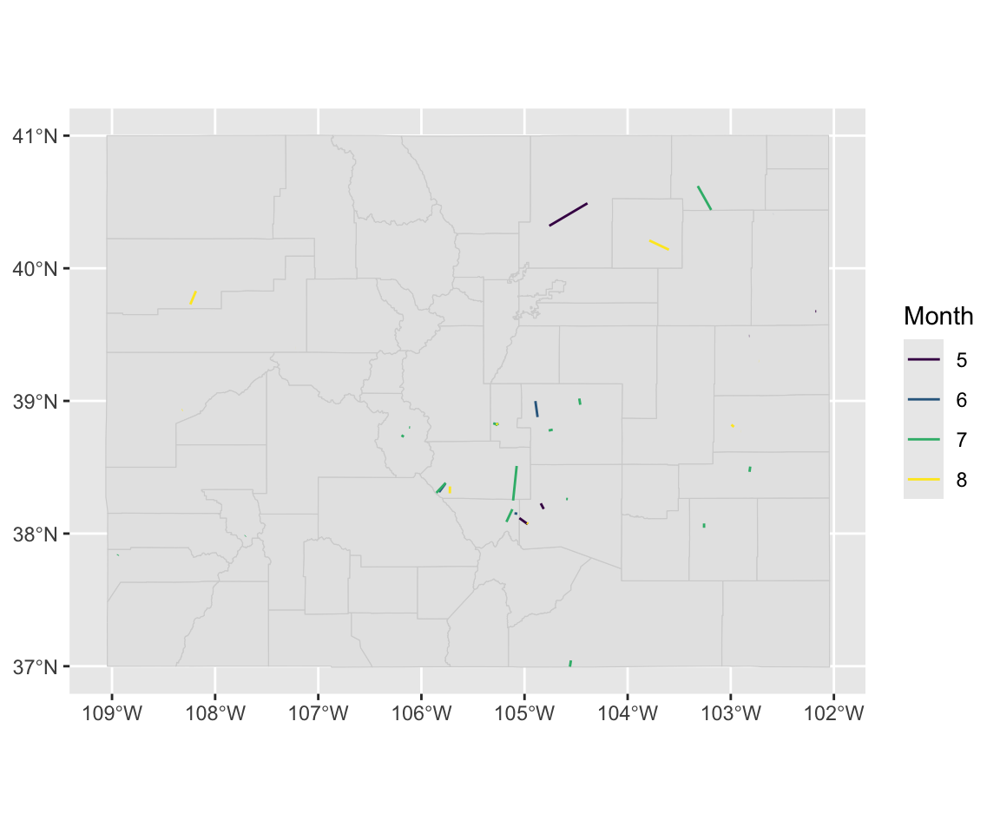

Chapter 8 Reporting results #2
Download a pdf of the lecture slides covering this topic.
8.1 Course lectures
In 2019, we cancelled our in-course meeting for bad weather.
There are videos of the lecture available, covering ggplot2 extensions and mapping in ggplot:
Example commit.
8.2 Example data
This week, we’ll be using some example data from NOAA’s Storm Events Database. This data lists major weather-related storm events during 2017. For each event, it includes information like the start and end dates, where it happened, associated deaths, injuries, and property damage, and some other characteristics.
See the in-course
exercises for this week for more on getting and cleaning this data. As part of the in-course
exercise, you’ll be making the following plot and saving it as the object storm_plot:

We’ll be using the data and this plot in the next sections.
8.3 ggplot2 extras and extensions
8.3.1 scales package
The scales package gives you a few more options for labeling with
your ggplot scales. For example, if you wanted to change the notation
for the axes in the plot of state area versus number of storm events,
you could use the scales package to add commas to the numeric axis values.
For the rest of these slides, I’ve saved the ggplot object with out plot to
the object named storm_plot, so we don’t have to repeat that code every time.
library(scales)
storm_plot +
scale_x_continuous(labels = comma) +
scale_y_continuous(labels = comma)
The scales package also includes labeling functions for:
- dollars (
labels = dollar) - percent (
labels = percent)
8.3.2 ggplot2 extensions
The ggplot2 framework is set up so that others can create packages that “extend”
the system, creating functions that can be added on as layers to a ggplot object.
Some of the types of extensions available include:
- More themes
- Useful additions (things that you may be able to do without the package, but that the package makes easier)
- Tools for plotting different types of data
There is a gallery with links to ggplot2 extensions at https://www.ggplot2-exts.org.
This list may not be exhaustive—there may be other extensions on CRAN or on GitHub
that the package maintainer did not submit for this gallery.
8.3.3 More ggplot2 themes
You have already played around a lot with using ggplot themes to change how your
graphs look.
Several people have created packages with additional themes:
ggthemesggthemrggtechggsci
library(ggthemes)
library(gridExtra)
a <- storm_plot +
theme_fivethirtyeight() +
ggtitle("Five Thirty Eight")
b <- storm_plot +
theme_economist() +
ggtitle("Economist")
c <- storm_plot +
theme_excel() +
ggtitle("Excel")
d <- storm_plot +
theme_few() +
ggtitle("Stephen Few")
grid.arrange(a, b, c, d, ncol = 2)
8.3.4 Other useful ggplot2 extensions
Other ggplot2 extensions do things you might have been able to figure out how
to do without the extension, but the extension makes it much easier to do.
These tasks include:
- Highlighting interesting points
- “Repelling” text labels
- Arranging plots
8.3.4.1 Repelling / highlighting with text labels
The first is repelling text labels. When you add labels to points on a plot, they often overlap:

The ggrepel package helps make sure that these labels don’t overlap:
It may be too much to label every point. Instead, you may just want to
highlight notable point.
You can use the gghighlight package to do that.
library(gghighlight)
storm_plot + facet_wrap(~ region) +
gghighlight(area > 150000 | n > 1500, label_key = state)The gghighlight package also works for things like histograms. For example, you could
create a dataset with the count by day-of-year of certain types of events:
storms_by_month <- storms_2017 %>%
filter(event_type %in% c("Flood", "Flash Flood", "Heavy Rain")) %>%
mutate(month = month(begin_date_time, label = TRUE)) %>%
group_by(month, event_type) %>%
count() %>%
ungroup()
storms_by_month %>%
slice(1:4)## # A tibble: 4 x 3
## month event_type n
## <ord> <chr> <int>
## 1 Jan Flash Flood 113
## 2 Jan Flood 255
## 3 Jan Heavy Rain 80
## 4 Feb Flash Flood 65ggplot(storms_by_month, aes(x = month, y = n, group = event_type)) +
geom_bar(stat = "identity") +
labs(x = "Month", y = "# of events") +
gghighlight(max(n) > 400, label_key = event_type) +
facet_wrap(~ event_type, ncol = 1)
8.3.4.2 Arranging plots
You may have multiple related plots you want to have as multiple panels of a
single figure.
There are a few packages that help with this. One very good one is patchwork.
You need to install this from GitHub:
Find out more: https://github.com/thomasp85/patchwork#patchwork
Say we want to plot seasonal patterns in events in the five counties with
the highest number of events in 2017. We can use dplyr to figure out these
counties:
top_counties <- storms_2017 %>%
group_by(fips, state, cz_name) %>%
count() %>%
ungroup() %>%
top_n(5, wt = n) Then create a plot with the time patterns:
library(forcats)
top_counties_month <- storms_2017 %>%
semi_join(top_counties, by = "fips") %>%
mutate(month = month(begin_date_time),
county = paste(cz_name, " County, ", state, sep = "")) %>%
count(county, month) %>%
ggplot(aes(x = month, y = n)) +
geom_bar(stat = "identity") +
facet_wrap(~ fct_reorder(county, n, .fun = sum, .desc = TRUE), nrow = 2) +
scale_x_continuous(name = "", breaks = c(1, 4, 7, 10),
labels = c("Jan", "Apr", "Jul", "Oct")) +
scale_y_continuous(name = "Frequency", breaks = c(0, 20))Here’s this plot:

Now that you have two ggplot objects (storm_plot and top_counties_month), you can use
patchwork to put them together:
A slightly fancier version:
(storm_plot + theme(legend.position = "top") +
gghighlight(n > 1500 | area > 200000,
label_key = state)) +
top_counties_month +
plot_layout(ncol = 1, heights = c(2, 1))Other packages for arranging ggplot objects include:
gridExtracowplot
8.4 Simple features
8.4.1 Introduction to simple features
sf objects: “Simple features”
- R framework that is in active development
- There will likely be changes in the near future
- Plays very well with tidyverse functions, including
dplyrandggplot2tools
To show simple features, we’ll pull in the Colorado county boundaries from the U.S. Census.
To do this, we’ll use the tigris package, which accesses the U.S. Census API. It allows you
to pull geographic data for U.S. counties, states, tracts, voting districts, roads, rails,
and a number of other geographies.
To learn more about the tigris package, check out this article:
https://journal.r-project.org/archive/2016/RJ-2016-043/index.html
With tigris, you can read in data for county boundaries using the counties
function.
We’ll use the option
class = "sf" to read these spatial dataframes in as sf objects.
## [1] "sf" "data.frame"You can think of an sf object as a dataframe, but with one special column called geometry.
## Simple feature collection with 3 features and 9 fields
## geometry type: MULTIPOLYGON
## dimension: XY
## bbox: xmin: -109.0603 ymin: 37.28912 xmax: -104.3511 ymax: 41.00344
## geographic CRS: NAD83
## STATEFP COUNTYFP COUNTYNS AFFGEOID GEOID NAME LSAD ALAND
## 1 08 077 00198154 0500000US08077 08077 Mesa 06 8621849401
## 2 08 107 00198169 0500000US08107 08107 Routt 06 6117602807
## 3 08 055 00198143 0500000US08055 08055 Huerfano 06 4120756304
## AWATER geometry
## 1 31490395 MULTIPOLYGON (((-109.0603 3...
## 2 15831744 MULTIPOLYGON (((-107.4426 4...
## 3 5792101 MULTIPOLYGON (((-105.5013 3...The geometry column has a special class (sfc):
## [1] "sfc_MULTIPOLYGON" "sfc"You’ll notice there’s some extra stuff up at the top, too:
- Geometry type: Points, polygons, lines
- Dimension: Often two-dimensional, but can go up to four (if you have, for example, time for each measurement and some measure of measurement error / uncertainty)
- Bounding box (bbox): The x- and y-range of the data included
- EPSG: The EPSG Geodetic Parameter Dataset code for the Coordinate Reference Systems
- Projection (proj4string): How the data is currently projected, includes projection (“+proj”) and datum (“+datum”)
You can pull some of this information out of the geometry column. For example, you can pull
out the coordinates of the bounding box:
## xmin ymin xmax ymax
## -109.06025 36.99243 -102.04152 41.00344## xmin ymin xmax ymax
## -109.06025 38.49999 -107.37748 39.36671You can add sf objects to ggplot objects using geom_sf:
You can map one of the columns in the sf object to the fill aesthetic to make a choropleth:

You can use all your usual ggplot tricks with this:
library(viridis)
ggplot() +
geom_sf(data = co_counties, aes(fill = ALAND)) +
scale_fill_viridis(name = "Land area", label = comma) +
ggtitle("Land areas of Colorado counties") +
theme_dark()
Because simple features are a special type of dataframe, you can also use a lot of dplyr tricks.
For example, you could pull out just Larimer County, CO:
## Simple feature collection with 1 feature and 9 fields
## geometry type: MULTIPOLYGON
## dimension: XY
## bbox: xmin: -106.1954 ymin: 40.25788 xmax: -104.9431 ymax: 40.99821
## geographic CRS: NAD83
## STATEFP COUNTYFP COUNTYNS AFFGEOID GEOID NAME LSAD ALAND
## 1 08 069 00198150 0500000US08069 08069 Larimer 06 6723025059
## AWATER geometry
## 1 99007869 MULTIPOLYGON (((-106.1954 4...Note: You may need the development version of ggplot2 for the next piece of code to work (devtools::install_github("tidyverse/ggplot2")).
ggplot() +
geom_sf(data = co_counties, color = "lightgray") +
geom_sf(data = larimer, fill = "darkcyan") +
geom_sf_text(data = larimer, aes(label = NAME), color = "white") +
theme_dark() + labs(x = "", y = "")
This operability with tidyverse functions means that you should now be able to figure out how to create a map of the number of events listed in the NOAA Storm Events database (of those listed by county) for each county in Colorado (for the code, see the in-course exercise):

8.4.2 State boundaries
The tigris package allows you to pull state boundaries, as well, but on some computers
mapping these seems to take a really long time.
Instead, for now I recommend that you pull the state boundaries using base R’s maps
package and convert that to an sf object:
##
## Attaching package: 'maps'## The following object is masked from 'package:purrr':
##
## map## The following object is masked from 'package:faraway':
##
## ozoneYou can see these borders include an ID column that you can use to join by state:
## Simple feature collection with 6 features and 1 field
## geometry type: MULTIPOLYGON
## dimension: XY
## bbox: xmin: -124.3834 ymin: 30.24071 xmax: -71.78015 ymax: 42.04937
## geographic CRS: WGS 84
## ID geom
## 1 alabama MULTIPOLYGON (((-87.46201 3...
## 2 arizona MULTIPOLYGON (((-114.6374 3...
## 3 arkansas MULTIPOLYGON (((-94.05103 3...
## 4 california MULTIPOLYGON (((-120.006 42...
## 5 colorado MULTIPOLYGON (((-102.0552 4...
## 6 connecticut MULTIPOLYGON (((-73.49902 4...As with other sf objects, you can map these state boundaries using ggplot:
As a note, you can use xlim and ylim with these plots, but remember that the x-axis is longitude in degrees West, which are negative:
8.4.3 Creating an sf object
You can create an sf object from a regular dataframe.
You just need to specify:
- The coordinate information (which columns are longitudes and latitudes)
- The Coordinate Reference System (CRS) (how to translate your coordinates to places in the world)
For the CRS, if you are mapping the new sf object with other, existing sf objects,
make sure that you use the same CRS for all sf objects.
Spatial objects can have different Coordinate Reference Systems (CRSs). CRSs can be geographic (e.g., WGS84, for longitude-latitude data) or projected (e.g., UTM, NADS83).
There is a website that lists projection strings and can be useful in setting projection information or re-projecting data: http://www.spatialreference.org
Here is an excellent resource on projections and maps in R from Melanie Frazier: https://www.nceas.ucsb.edu/~frazier/RSpatialGuides/OverviewCoordinateReferenceSystems.pdf
Let’s look at floods in Colorado. First, clean up the data:
co_floods <- storms_2017 %>%
filter(state == "Colorado" &
event_type %in% c("Flood", "Flash Flood")) %>%
select(begin_date_time, event_id, begin_lat:end_lon) %>%
gather(key = "key", value = "value",
-begin_date_time, -event_id) %>%
separate(key, c("time", "key")) %>%
spread(key = key, value = value)There are now two rows per event, one with the starting location and one with the ending location:
## # A tibble: 5 x 5
## begin_date_time event_id time lat lon
## <dttm> <dbl> <chr> <dbl> <dbl>
## 1 2017-05-08 16:00:00 693374 begin 40.3 -105.
## 2 2017-05-08 16:00:00 693374 end 40.5 -104.
## 3 2017-05-10 15:00:00 686479 begin 38.1 -105.
## 4 2017-05-10 15:00:00 686479 end 38.1 -105.
## 5 2017-05-10 15:20:00 686480 begin 38.2 -105.Change to an sf object by saying which columns are the coordinates and setting a CRS:
co_floods <- st_as_sf(co_floods, coords = c("lon", "lat")) %>%
st_set_crs(4269)
co_floods %>% slice(1:3)## Simple feature collection with 3 features and 3 fields
## geometry type: POINT
## dimension: XY
## bbox: xmin: -105.0496 ymin: 38.1167 xmax: -104.39 ymax: 40.49
## geographic CRS: NAD83
## # A tibble: 3 x 4
## begin_date_time event_id time geometry
## <dttm> <dbl> <chr> <POINT [°]>
## 1 2017-05-08 16:00:00 693374 begin (-104.76 40.32)
## 2 2017-05-08 16:00:00 693374 end (-104.39 40.49)
## 3 2017-05-10 15:00:00 686479 begin (-105.0496 38.1167)Now you can map the data:
ggplot() +
geom_sf(data = co_counties, color = "lightgray") +
geom_sf(data = co_floods, aes(color = month(begin_date_time),
shape = time)) +
scale_color_viridis(name = "Month") 
If you want to show lines instead of points, group by the appropriate ID and then summarize within each event to get a line:
co_floods <- co_floods %>%
group_by(event_id) %>%
summarize(month = month(first(begin_date_time)),
do_union = FALSE) %>%
st_cast("LINESTRING")## `summarise()` ungrouping output (override with `.groups` argument)## Simple feature collection with 6 features and 2 fields
## geometry type: LINESTRING
## dimension: XY
## bbox: xmin: -105.8286 ymin: 38.0708 xmax: -104.39 ymax: 40.49
## geographic CRS: NAD83
## # A tibble: 6 x 3
## event_id month geometry
## <dbl> <dbl> <LINESTRING [°]>
## 1 686479 5 (-105.0496 38.1167, -104.9687 38.0708)
## 2 686480 5 (-104.8425 38.2275, -104.8137 38.1854)
## 3 693306 6 (-104.8947 38.999, -104.8734 38.8783)
## 4 693374 5 (-104.76 40.32, -104.39 40.49)
## 5 693444 6 (-105.7688 38.3753, -105.8286 38.3127)
## 6 693449 6 (-105.07 38.15, -105.0973 38.1524)Now this data will map as lines:
8.4.4 Reading in from GIS files
You can also create sf objects by reading in data from files you would normally use for GIS.
For example, you can read in an sf object from a shapefile, which is a format often used for GIS in which a collection of several files jointly store geographic data. The files making up a shapefile can include:
- “.shp”: The coordinates defining the shape of each geographic object. For a point, this would be a single coordinate (e.g., latitude and longitude). For lines and polygons, there will be multiple coordinates per geographic object.
- “.prf”: Information on the projection of the data (how to get from the coordinates to a place in the world).
- “.dbf”: Data that goes along with each geographical object. For example, earlier we looked at data on counties, and one thing measured for each county was its land area. Characteristics like that would be included in the “.dbf” file in a shapefile.
Often, with geographic data, you will be given the option to downloaded a compressed file (e.g., a zipped file). When you unzip the folder, it will include a number of files in these types of formats (“.shp”, “prf”, “.dbf”, etc.).
Sometimes, that single folder will include multiple files from each extension. For example, it might have several files that end with “.shp”. In this case, you have multiple layers of geographic information you can read in.
We’ve been looking at data on storms from NOAA for 2017. As an example, let’s try to pair that data up with some from the National Hurricane Center for the same year.
The National Hurricane Center allows you to access a variety of GIS data through the webpage https://www.nhc.noaa.gov/gis/?text.
Let’s pull some data on Hurricane Harvey in 2017 and map it with information from the NOAA Storm Events database.
On https://www.nhc.noaa.gov/gis/?text, go to the section called “Preliminary Best Track”. Select the year 2017. Then select “Hurricane Harvey” and download “al092017_best_track.zip”.
Depending on your computer, you may then need to unzip this file (many computers will
unzip it automatically). Base R has a function called unzip that can help with this.
You’ll then have a folder with a number of different files in it. Move this folder somewhere that is convenient for the working directory you use for class. For example, I moved it into the “data” subdirectory of the working directory I use for the class.
You can use list.files to see all the files in this unzipped folder:
## [1] "al092017_lin.dbf" "al092017_lin.prj"
## [3] "al092017_lin.shp" "al092017_lin.shp.xml"
## [5] "al092017_lin.shx" "al092017_pts.dbf"
## [7] "al092017_pts.prj" "al092017_pts.shp"
## [9] "al092017_pts.shp.xml" "al092017_pts.shx"
## [11] "al092017_radii.dbf" "al092017_radii.prj"
## [13] "al092017_radii.shp" "al092017_radii.shp.xml"
## [15] "al092017_radii.shx" "al092017_windswath.dbf"
## [17] "al092017_windswath.prj" "al092017_windswath.shp"
## [19] "al092017_windswath.shp.xml" "al092017_windswath.shx"You can use st_layers to find out the available layers in a shapefile directory:
## Driver: ESRI Shapefile
## Available layers:
## layer_name geometry_type features fields
## 1 al092017_windswath Polygon 4 6
## 2 al092017_radii Polygon 61 9
## 3 al092017_lin Line String 17 3
## 4 al092017_pts Point 74 15Once you know which layer you want, you can use read_sf to read it in as an sf object:
## Simple feature collection with 6 features and 3 fields
## geometry type: LINESTRING
## dimension: XY
## bbox: xmin: -92.3 ymin: 13 xmax: -45.8 ymax: 21.4
## geographic CRS: Unknown datum based upon the Authalic Sphere
## # A tibble: 6 x 4
## STORMNUM STORMTYPE SS geometry
## <dbl> <chr> <int> <LINESTRING [°]>
## 1 9 Low 0 (-45.8 13.7, -47.4 13.7, -49 13.6, -50.6 13.6, …
## 2 9 Tropical Depr… 0 (-52 13.4, -53.4 13.1, -55 13)
## 3 9 Tropical Storm 0 (-55 13, -56.6 13, -58.4 13, -59.6 13.1, -60.3 …
## 4 9 Tropical Depr… 0 (-67.5 13.7, -69.2 13.8)
## 5 9 Tropical Wave 0 (-69.2 13.8, -71 14, -72.9 14.2, -75 14.4, -76.…
## 6 9 Low 0 (-89.7 20, -90.7 20.5, -91.6 20.9, -92.3 21.4)ggplot() +
geom_sf(data = filter(us_states, ID %in% c("texas", "louisiana"))) +
geom_sf(data = harvey_track, aes(color = STORMTYPE)) +
xlim(c(-107, -89)) + ylim(c(25, 37)) 
You can read in other layers:
harvey_windswath <- read_sf("data/al092017_best_track/",
layer = "al092017_windswath")
head(harvey_windswath)## Simple feature collection with 4 features and 6 fields
## geometry type: POLYGON
## dimension: XY
## bbox: xmin: -98.66872 ymin: 12.94564 xmax: -54.58527 ymax: 31.15894
## geographic CRS: Unknown datum based upon the Authalic Sphere
## # A tibble: 4 x 7
## RADII STORMID BASIN STORMNUM STARTDTG ENDDTG geometry
## <dbl> <chr> <chr> <dbl> <chr> <chr> <POLYGON [°]>
## 1 34 al092017 AL 9 2017081… 20170… ((-65.68199 14.50528, -65.66399…
## 2 34 al092017 AL 9 2017082… 20170… ((-96.22456 31.15752, -96.17218…
## 3 50 al092017 AL 9 2017082… 20170… ((-97.32707 29.60604, -97.31424…
## 4 64 al092017 AL 9 2017082… 20170… ((-97.20689 29.08475, -97.19893…ggplot() +
geom_sf(data = filter(us_states, ID %in% c("texas", "louisiana"))) +
geom_sf(data = harvey_windswath,
aes(fill = factor(RADII)), alpha = 0.2) +
xlim(c(-107, -89)) + ylim(c(25, 37)) +
scale_fill_viridis(name = "Wind (kts)", discrete = TRUE,
option = "B", begin = 0.6, direction = -1)
The read_sf function is very powerful and can read in data from lots of different
formats.
See Section 2 of the sf manual (https://cran.r-project.org/web/packages/sf/vignettes/sf2.html)
for more on this function.
You can find (much, much) more on working with spatial data in R online:
- R Spatial: http://rspatial.org/index.html
- Geocomputation with R: https://geocompr.robinlovelace.net
8.5 In-course exercise
8.5.1 Getting and cleaning the example data
This week, we’ll be using some example data from NOAA’s Storm Events Database.
This data lists major weather-related storm events during 2017.
For each event, it includes information like the start and end dates, where it
happened, associated deaths, injuries, and property damage, and some other
characteristics.
Each row is a separate event. However, often several events are grouped together
within the same episode.
Some of the event types are listed by their county ID (FIPS code) (“C”), but some are listed
by a forecast zone ID (“Z”). Which ID is used is given in the column CZ_TYPE.
- Go to https://www1.ncdc.noaa.gov/pub/data/swdi/stormevents/csvfiles/ and download the bulk storm details data for 2017, in the file that starts “StormEvents_details” and includes “d2017”.
- Move this into a good directory for your current working directory and read it in
using
read_csvfrom thereadrpackage. - Limit the dataframe to: the beginning and ending dates and times, the episode ID, the event ID, the state name and FIPS, the “CZ” name, type, and FIPS, the event type, the source, and the begining latitude and longitude and ending latitude and longitude
- Convert the beginning and ending dates to a “date-time” class (there should be one column for the beginning date-time and one for the ending date-time)
- Change state and county names to title case (e.g., “New Jersey” instead of “NEW JERSEY”)
- Limit to the events listed by county FIPS (
CZ_TYPEof “C”) and then remove theCZ_TYPEcolumn - Pad the state and county FIPS with a “0” at the beginning (hint: there’s
a function in
stringrto do this) and then unite the two columns to make onefipscolumn with the 5-digit county FIPS code - Change all the column names to lower case (you may want to try the
rename_allfunction for this) - There is data that comes with R on U.S. states (
data("state")). Use that to create a dataframe with the state name, area, and region - Create a dataframe with the number of events per state in 2017. Merge in the state information dataframe you just created. Remove any states that are not in the state information dataframe
- Create the following plot:
8.5.1.1 Example R code
Read in the data using read_csv. Here’s the code I used. Yours might be a bit different,
depending on the current name of the file and where you moved it.
library(readr)
library(dplyr)
storms_2017 <- read_csv("data/StormEvents_details-ftp_v1.0_d2017_c20180918.csv")## Parsed with column specification:
## cols(
## .default = col_character(),
## BEGIN_YEARMONTH = col_double(),
## BEGIN_DAY = col_double(),
## BEGIN_TIME = col_double(),
## END_YEARMONTH = col_double(),
## END_DAY = col_double(),
## END_TIME = col_double(),
## EPISODE_ID = col_double(),
## EVENT_ID = col_double(),
## STATE_FIPS = col_double(),
## YEAR = col_double(),
## CZ_FIPS = col_double(),
## INJURIES_DIRECT = col_double(),
## INJURIES_INDIRECT = col_double(),
## DEATHS_DIRECT = col_double(),
## DEATHS_INDIRECT = col_double(),
## MAGNITUDE = col_double(),
## CATEGORY = col_double(),
## TOR_LENGTH = col_double(),
## TOR_WIDTH = col_double(),
## BEGIN_RANGE = col_double()
## # ... with 5 more columns
## )## See spec(...) for full column specifications.Here’s what the first few columns and rows should look like:
## # A tibble: 3 x 3
## BEGIN_YEARMONTH BEGIN_DAY BEGIN_TIME
## <dbl> <dbl> <dbl>
## 1 201704 6 1509
## 2 201704 6 930
## 3 201704 5 1749Once you’ve read the data in, here’s the code that I used to clean the data:
library(lubridate)
library(stringr)
library(tidyr)
storms_2017 <- storms_2017 %>%
select(BEGIN_DATE_TIME, END_DATE_TIME,
EPISODE_ID:STATE_FIPS, EVENT_TYPE:CZ_NAME, SOURCE,
BEGIN_LAT:END_LON) %>%
mutate(BEGIN_DATE_TIME = dmy_hms(BEGIN_DATE_TIME),
END_DATE_TIME = dmy_hms(END_DATE_TIME),
STATE = str_to_title(STATE),
CZ_NAME = str_to_title(CZ_NAME)) %>%
filter(CZ_TYPE == "C") %>%
select(-CZ_TYPE) %>%
mutate(STATE_FIPS = str_pad(STATE_FIPS, 2, side = "left", pad = "0"),
CZ_FIPS = str_pad(CZ_FIPS, 3, side = "left", pad = "0")) %>%
unite(fips, STATE_FIPS, CZ_FIPS, sep = "") %>%
rename_all(funs(str_to_lower(.)))Here’s what the data looks like now:
## # A tibble: 3 x 13
## begin_date_time end_date_time episode_id event_id state fips
## <dttm> <dttm> <dbl> <dbl> <chr> <chr>
## 1 2017-04-06 15:09:00 2017-04-06 15:09:00 113355 678791 New … 34015
## 2 2017-04-06 09:30:00 2017-04-06 09:40:00 113459 679228 Flor… 12071
## 3 2017-04-05 17:49:00 2017-04-05 17:53:00 113448 679268 Ohio 39057
## # … with 7 more variables: event_type <chr>, cz_name <chr>, source <chr>,
## # begin_lat <dbl>, begin_lon <dbl>, end_lat <dbl>, end_lon <dbl>There is data that comes with R on U.S. states (data("state")). Use that to create a dataframe
with the state name, area, and region:
data("state")
us_state_info <- data_frame(state = state.name,
area = state.area,
region = state.region)Create a dataframe with the number of events per state in 2017. Merge in the state information dataframe you just created. Remove any states that are not in the state information dataframe:
state_storms <- storms_2017 %>%
group_by(state) %>%
count() %>%
ungroup() %>%
right_join(us_state_info, by = "state")To create the plot:
Ultimately, in this group exercise, you will create a plot of state land area versus the number of storm events in the state:
8.5.2 Trying out ggplot2 extensions
- Go back through the notes so far for this week. Pick your favorite plot that’s been shown
so far and recreate it. All the code is in the notes, but you’ll need to work through it
closely to make sure that you understand how to add code from the extension into the
rest of the
ggplot2code.
8.5.3 Using simple features to map
- Re-create the following map of the number of events listed in the NOAA Storm Events database (of those listed by county) for each county in Colorado:

- If you have time, try this one, too. It shows the number of three certain types of events by county. If a county had no events, it’s shown in gray (as having a missing value when you count up the events that did happen).

8.5.3.1 Example R code
Here is some R code that could be used to create the figure. Note that the code to create storms_2017 and
co_counties is available in the course notes.
library(viridis)
co_event_counts <- storms_2017 %>%
filter(state == "Colorado") %>%
group_by(fips) %>%
count() %>%
ungroup()
co_county_events <- co_counties %>%
mutate(fips = paste(STATEFP, COUNTYFP, sep = "")) %>%
full_join(co_event_counts, by = "fips") %>%
mutate(n = ifelse(!is.na(n), n, 0))
ggplot() +
geom_sf(data = co_county_events, aes(fill = n)) +
scale_fill_viridis(name = "Number of events\n(2017)")Example code for second plot:
co_event_counts <- storms_2017 %>%
filter(state == "Colorado") %>%
filter(event_type %in% c("Tornado", "Heavy Rain", "Hail")) %>%
group_by(fips, event_type) %>%
count() %>%
ungroup()
co_county_events <- co_counties %>%
mutate(fips = paste(STATEFP, COUNTYFP, sep = "")) %>%
right_join(co_event_counts, by = "fips")
ggplot() +
geom_sf(data = co_counties, color = "lightgray") +
geom_sf(data = co_county_events, aes(fill = n)) +
scale_fill_viridis(name = "Number of events\n(2017)") +
theme(legend.position = "top") +
facet_wrap(~ event_type, ncol = 3) +
theme(axis.line = element_blank(),
axis.text = element_blank(),
axis.ticks = element_blank())8.5.4 More on mapping
- See if you can put everything we’ve talked about together
to create the following map. Note that you can get the county boundaries using the
tigrispackage and the hurricane data from the NHC website mentioned in the text. The storm events data is in thestorms_2017dataframe created in code in the text. See how close you can get to this figure.

8.5.4.1 Example R code
Here is the code I used to create the figure:
harvey_events <- storms_2017 %>%
filter(state %in% c("Texas", "Louisiana") &
ymd_hms("2017-08-25 00:00:00") < begin_date_time &
begin_date_time < ymd_hms("2017-10-05 00:00:00")) %>%
group_by(fips) %>%
count() %>%
ungroup()
tx_la_counties <- counties(state = c("TX", "LA"), cb = TRUE, class = "sf") %>%
mutate(fips = paste(STATEFP, COUNTYFP, sep = "")) %>%
full_join(harvey_events, by = "fips") %>%
mutate(n = ifelse(is.na(n), 0, n))
ggplot() +
geom_sf(data = tx_la_counties, color = NA,
aes(fill = n)) +
geom_sf(data = filter(us_states, ID %in% c("texas", "louisiana")),
fill = NA, color = "lightgray") +
geom_sf(data = harvey_windswath,
aes(color = factor(RADII)), alpha = 0.4) +
geom_sf(data = harvey_track, color = "red",
alpha = 0.1, size = 1) +
xlim(c(-107, -89)) + ylim(c(25, 37)) +
scale_fill_viridis(name = "# of events", option = "A", direction = -1) +
scale_color_viridis(name = "Wind (kts)", discrete = TRUE,
option = "B", direction = -1) +
theme_dark() +
ggtitle("Number of events near Harvey's landfall",
subtitle = "# events starting Aug. 25 to Sept. 5, 2017")